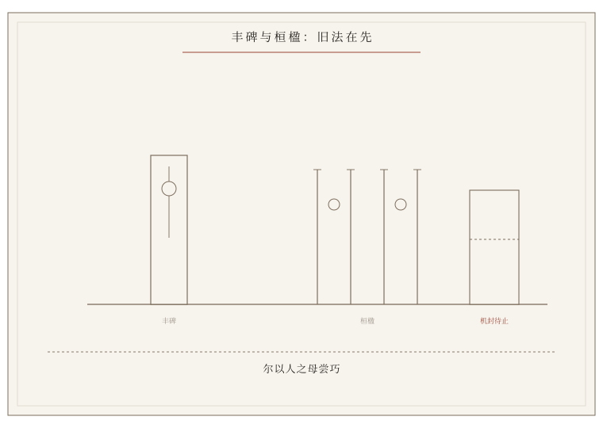

檀弓下 · 四·五十七 · 第 382 课
季康子之母死，公输若方小。敛，般请以机封。将从之。公肩假曰：「不可。夫鲁有初：公室视丰碑，三家视桓楹。般，尔以人之母尝巧，则岂不得以？其母以尝巧者乎？则病者乎？噫！」弗果从。
说什么事：季康子之母死，匠师公输若年幼。下棺时，公输般请以机械装置下棺。季康子将要从之。公肩假说：「不可。鲁国有旧法：公室之葬比照丰碑，三家比照桓楹。般，你拿人家的母亲来试你的巧吗？难道不能停下来？难道不在你身上就成了病吗？唉！」于是终于没有从。
落在哪一层：以「尝巧」斥技术之越。器之巧，不可施于人之亲。
为何编在此位：上节删礼之半，此节改礼之器。一删一改，皆见「以方便代礼」之渐。
【经】季康子之母死，公输若方小。敛，般请以机封。将从之。公肩假曰：「不可。夫鲁有初：公室视丰碑，三家视桓楹。般，尔以人之母尝巧，则岂不得以？其母以尝巧者乎？则病者乎？噫！」弗果从。
【注】公输若，匠师。方小，言年尚幼，未知礼也。／敛，下棺于椁。般，若之族，多技巧者，见若掌敛事而年尚幼，请代之，而欲尝其技巧。／时人服般之巧。／初，谓故事。公室视丰碑，言视者，时僭天子也。丰碑，斫大木为之，形如石碑，于椁前后四角树之，穿中于间为鹿卢，下棺以繂绕。天子六繂四碑，前后各重鹿卢也。／三家视桓楹。时僭诸侯。诸侯下天子也，斫之形如大楹耳，四植谓之桓。诸侯四繂二碑，碑如桓矣。大夫二繂二碑，士二繂无碑。／「以」与「己」字本同。／毋，无也。于女宁有病苦与，止之。／不寤之声。
【疏】此一节论非礼尝巧不从之事。／季康子母死，公输若为匠师之官，年方幼小，主掌窆事，欲下棺敛于壙中。其若之族人公输般性有技巧，请为以转动机关窆而下棺。时人服般之巧。／将从之时，有公肩假止而不许，曰：不可为机窆之事，夫鲁有初始旧礼，公室之丧，视丰碑。丰，大也，谓用大木为碑。三家之葬，视桓楹也。桓，大也；楹，柱也。其用之碑如大楹柱。言之旧事，其法如此。遂呼般之名，般，女得以人之母而尝巧乎？尝，试也，欲以人母试己巧事。谁有强逼于女而为此乎？岂不得休已者哉！又语之云，其无以人母尝试己巧，则于女病者乎？言不得尝巧，岂于女有病？公肩假既告般为此言，乃更噫而伤叹。于是众人遂止，不果从般之事。／凡言「视」者，不正相当比拟之辞也。故《王制》云「天子之三公视公侯，卿视伯，大夫视子男」是也。故云「言视，僭天子也」。
季康子 鲁三家之一，季孙氏。
公输若 匠师，掌窆事，年尚幼。
方小 年尚幼小。
敛 此指下棺入椁。
般 公输般，即鲁班，若之族人。
机封 以机械装置下棺。封，下棺。
将从之 正要听从。
公肩假 鲁人。
初 旧例，故事。
视丰碑 比照丰碑之制。视，比拟。
丰碑 以大木为之，形如石碑，穿中置鹿卢。
桓楹 四植之木，形如大楹。
尝巧 拿它来试自己的巧技。
不得以 「以」同「已」，即不能止。
病 病苦。注云「于女宁有病苦与」。
噫 叹声。注云「不寤之声」。
季康子的母亲死了，匠师公输若年幼。下棺时，公输般请求用机械装置下棺，季康子将要从之。公肩假说：「不可。鲁国有旧例：公室之葬比照丰碑，三家之葬比照桓楹。般，你拿别人的母亲来试你的巧吗？难道就不能罢手吗？难道不用人母试巧，你身上就有病苦吗？唉！」于是终于没有从。
此章记一次技术被挡住。一个有本事的人想做一件新事，一个老人说：这里不许试。
「尝巧」二字，是此章的关键。
第一层 「方小」与「请代」 公输若为匠师而年幼，不知礼；其族人般有技巧，愿代其事。
此一情形极为常见：老手不在，能者自荐。 而自荐的理由，是「欲尝其技巧」。
第二层 「机封」之利 疏云「以转动机关窆而下棺」。
下棺入椁，最怕偏斜与撞击。机械可使棺平直缓下——从技术上说，此议是对的。
第三层 「时人服般之巧」 一句实话：当时人都佩服他。
此一节不以「众人皆非」立论。 众人服其巧，公肩假仍不许，故其所争不在优劣，在分寸。
第四层 「夫鲁有初」：先立旧法 公肩假开口不言「不可」，先说「鲁有初」。
先摆旧法，再断新事。 旧法者何？公室视丰碑，三家视桓楹——各有其制，各有其数。
此一节把问题从「巧不巧」转到「合不合」。 制度在前，技术在后。
第五层 「尔以人之母尝巧」 此一句最重。
「尝巧」者，以人之至痛，为你试手之场。所斥者不是巧，是把人当试验。
此一斥，立下一条线：技术的试验场，不能在别人的丧事上。
第六层 「则岂不得以」「则病者乎」：两问一叹 第一问：难道就不能停？第二问：不用人母试巧，你就有病苦吗？
两问皆不责其心，只问其必要。 若不必试，何必此时；若不试便无病，何必强试。
末一「噫」，注云「不寤之声」——叹其终不能明白。
第七层 「弗果从」 众人遂止。
此一节最见礼之力量：它不说服，只否准。 一个「不可」，加上一条旧法，加上两问，事情就停了。
第八层 「视」字之义 注云「凡言视者，不正相当比拟之辞」——比照，非等同。
此一层辨明：鲁之公室用丰碑是「视」天子，即僭；三家视桓楹是「视」诸侯，亦僭。
此一细节，说明公肩假所据之旧法，本身已含僭越。他守的不是纯正之礼，是「有法可依」这件事本身。
与今日何干 今之技术迭代，多以「更优」为理由，越过人情之界。
此章给一句：别人的丧事，不是你的试验场。
| 左 | 右 |
|---|---|
| 公输若方小 | 不知礼 |
| 般请以机封 | 欲尝其巧 |
| 将从之 | 时人服其巧 |
| 夫鲁有初 | 先立旧法 |
| 公室视丰碑 | 其制 |
| 三家视桓楹 | 其制 |
| 尔以人之母尝巧 | 斥其试 |
| 则岂不得以 | 问其必要 |
| 噫 | 不寤之声 |
画墓壙的一角，视点斜俯。壙为一长方形土坑，坑中已置一具外椁。椁的上方画四根高木，分立于椁之四角，每根木的中段凿空，空处置一枚小圆轮。四根木之间悬着一具棺，棺以数道细线系住，线绕过圆轮。坑边另画一人形，作指画之状，其旁一人作止之之状，手掌前伸。不画文字。赭色只用在那人前伸的手掌边上。
